Week 5, Class 1: Visualising Networks with ggraph
Network visualisations
Many analyses of networks rely on visualisation. Graphing a network is particularly useful for descriptive data analysis, as a way of describing the overall structure of graph, and exploratory data analysis, where it’s used as a sort of map to understand its various components, and to help spot patterns or interesting features by eye. These visualisations are most often the points and lines type diagrams which we have used throughout this book, but there are also a number of other ways they can be visualised (which often might be more useful).
It’s important to note that there is nothing inherently spatial about a graph: it is simply a record of connections between nodes. When we choose to represent it visually, we have to make decisions as to its form and how precisely its nodes and edges are placed in 2D (or even 3D) space.
From early social network research, researchers tried to manually visualise these graphs in meaningful ways, for example by placing closely-connected clusters together (and away from other clusters), placing important or highly-connected nodes towards the centre, or minimising the number of edge (line) crossings. With large networks, today this process is usually carried out using algorithms to work out the node placements.
Force-directed network visualisations
The most common family of these algorithms are ‘force-directed’, meaning they use a simulation of physical forces in order to create sensible placements of nodes. One of the most common of these is the Fruchterman-Reingold layout, which treats edges like a spring. Nodes which share an edge are attracted to each other using a spring-like force; every pair of nodes in the system also has a repulsive force. The algorithm simulates this physical system and stops when the distances between the nodes means that the system is in equilibrium.
A good force-directed graph can actually convey a great deal of information about a network. The paper for this week’s reading argues that the ambiguity of a force-directed graph can actually make them very useful for exploratory data analysis, when they are interpreted correctly.
Reading a network graph
Using a similar approach to that paper, consider this network of book publishers from the eighteenth century:

This is a large network, consisting of tens of thousands of nodes and millions of edges. The nodes are coloured by ‘community’, meaning tthat each colour of nodes is more densely connected to each other than to the nodes of other colours. Despite its size, some structure can be seen. We could describe it as the following:
Spatially (ignoring the colours), there are three main sections: a large central section, and two smaller sections, one to the bottom-right and another, even smaller, to the top-left of the main section.
This main section is shaped a bit like a hairbrush: it has an elongated ‘handle’, and an attached ‘brush’ at the top.
The colours are distinct, meaning that the force-directed graph did a good job in replicating the clusters found by the community detection algorithm.
To understand why it might have this shape, we looked into the nodes in each of its clusters.
The first thing we noted was that the almost separate ‘islands’ were groups of Dublin (larger and closer island) and US publishers.
The main section is made up of clusters of different time periods. Each time period is connected to the others mainly by a short edge, meaning that (for example) the 1700 - 1720 cluster is much more connected to the 1720 - 1740 cluster than to the 1780 - 1800 cluster, for example. This is typical in a long, multi-generational dataset like this.
The handle is mostly London-based publishers, and the ‘brush’ is a group of Scottish publishers. These Scottish publishers are mostly connected to the later London clusters (red/pink). Scottish publishers are much closer to the London core than either Dublin or US.
Some inferences we might make from this diagram.
US and Dublin publishers were very separate from a London/Edinburgh publishing axis.
For London publishers, the strongest pull is temporal rather than any other aspect.
Over time, the closeness of the Edinburgh and London publisher networks grew.
When used correctly and with more knowledge about a network, force-directed diagrams like this can help to spot distinct clusters, structural ‘holes’, and other features of a network.
Avoiding the dreaded ‘hairball’
Visualising large networks using these methods can often result in a large tangled mass of nodes and edges, known perojatively as a ‘hairball’. This is particularly true of large graphs without much of a tendency to cluster together, such as this graph of Facebook page networks(Rozemberczki, Allen, and Sarkar 2021).

These graphs have limited use, even as exploratory data. There are some ways to mitigate against them, however:
Consider filtering the network, as in the previous steps. Make sure you’re aware of the consequences of filtering before and after you calculate network metrics, however.
For large graphs, software such as Gephi, because it gives a real-time feedback of a network visualisation, can be useful, rather than purely using a programming language such as R.
Think about whether a network diagram (or a network model at all) is the best way to represent or display your data. Could you arrive at the same conclusions with a simpler data analysis and output, such as a bar chart?
Other Network Visualisations
There are many other ways besides a ‘force-directed’ graph to visualise a network.
Bipartite graph
Some network types are particularly suited to other visualisation methods. Bipartite networks, for example, are often visualised so that the nodes are placed in two rows, according to their types. The positions within the rows are then determined by an algorithm designed to minimise edge crossings.
EL = c(1,7,2,6,3,8,2,5,4,6,1,5,2,6)
types = rep(0:1, each=4)
g = make_bipartite_graph(types, EL, directed = FALSE)
g %>% ggraph('bipartite')+
geom_edge_link() +
geom_node_point(size = 10, aes(color = as.character(types))) + coord_flip() + theme_void() + theme(legend.position = 'bottom') + labs(color = 'Type:')
Network Visualisations with R and ggraph.
Visualisations like the examples above can be created with another R package, called ggraph. This uses the same basic syntax as the plotting library ggplot2, we used in an earlier lesson, but adds some special functions to visualise networks.
To create a network diagram,we first create a network object as in previous lessons.
library(tidygraph)
library(tidyverse)
library(ggraph)
letters = read_csv("letter_data.csv", col_types = cols(.default = "c"))
edge_list = letters %>%
group_by(from_id, to_id) %>%
tally(name = 'weight')
sample_tbl_graph = edge_list %>%
as_tbl_graph()This object is then passed to the function ggraph(), using the pipes.
ggraph() tells R to begin drawing a graph. It has optional arguments: for example, you can set the layout to something other than the default using the argument layout =.
sample_tbl_graph %>% ggraph(layout = 'fr')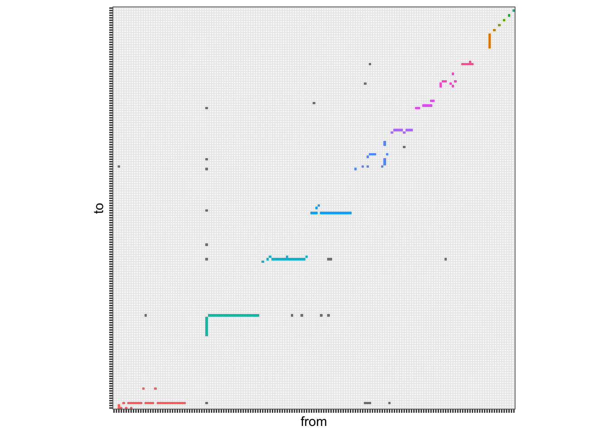
You’ll notice that it doesn’t draw anything other than a blank grey background.
ggraph uses the syntax as the plotting library ggplot2. Recall from Week 1, class 2, that plots in ggplot2 are created by adding geom_ functions to the blank plot.
The same principle applies here, except with special ggraph geoms:
First,
geom_node_point(), will draw the nodes of your network as points. The nodes are positioned using the chosen (or default) layout algorithm.Next,
geom_edge_link()will drawn the edges as connecting lines.
sample_tbl_graph %>%
ggraph('fr') +
geom_node_point() +
geom_edge_link()
There are many additional ways you can manipulate the visual appearance of your nodes and edges, for example by adding color, size, shape, arrows, and so forth.
In ggraph (and ggplot), visual elements can be manipulated in two ways: you can either specify a value for a visual property, or you can specify that a property is mapped to a particular data point.
This is all done with the relevant geom. To do the former, specify the value directly in the geom, like this:
sample_tbl_graph %>%
ggraph('fr') +
geom_node_point(size = 3) + # we specified that size should be set at the value 3
geom_edge_link()
To map data to a particular data point, specify the data to be used within the geom, within a command aes():
sample_tbl_graph %>%
mutate(degree = centrality_degree()) %>% # calculate a value for degree
ggraph('fr') +
geom_edge_link() + # switch around the order of the nodes and edges as it's easier to see the node color
geom_node_point(size = 3, aes(color = degree)) # as well as the size, color is now mapped to the degree score.Other visual properties which can be mapped or specified include shape and alpha.
The visual appearance of edges can also be adjusted, using the same syntax.
Change to a dashed line using linetype:
sample_tbl_graph %>%
mutate(degree = centrality_degree()) %>%
ggraph('fr') +
geom_edge_link(linetype = 5) +
geom_node_point(size = 3, aes(color = degree))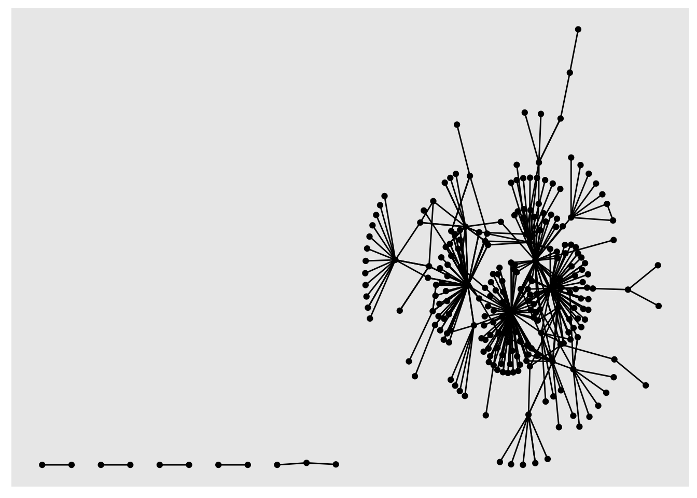
You can also add arrows, with the following syntax. The length and endcap arguments control the appearance of the arrow.
sample_tbl_graph %>%
mutate(degree = centrality_degree()) %>%
ggraph('fr') +
geom_edge_link(linetype = 5,
arrow = arrow(length = unit(4, 'mm')),
end_cap = circle(3, 'mm')) +
geom_node_point(size = 3, aes(color = degree))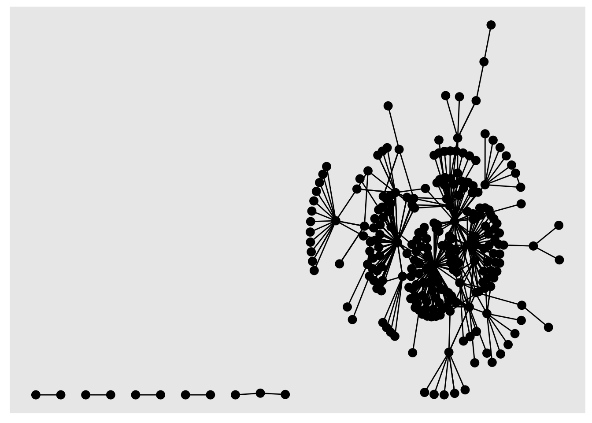
Network Graph Layouts
Igraph has a number of graph layouts. Depending on your network size and structure, different ones may be appropriate. Where possible, it is a good idea to add some other information, for example group membership or simply node names to your visualisation, at least temporarily. That way you can check to see if the visual structures, such as clusters, centre-periphery, and orientation, make any sense. Here are the most common graph layouts:
Fruchterman-Reingold
sample_tbl_graph %>%
mutate(degree = centrality_degree()) %>%
ggraph('fr') +
geom_edge_link(linetype = 5,
arrow = arrow(length = unit(4, 'mm')),
end_cap = circle(3, 'mm')) +
geom_node_point(size = 3, aes(color = degree))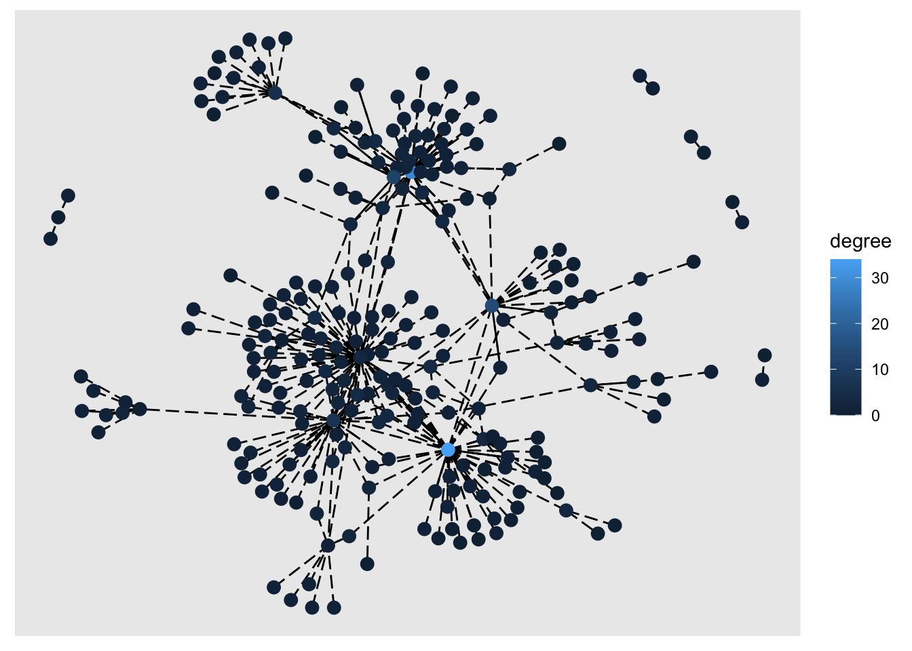
DRL
sample_tbl_graph %>%
mutate(degree = centrality_degree()) %>%
ggraph('drl') +
geom_edge_link(linetype = 5,
arrow = arrow(length = unit(4, 'mm')),
end_cap = circle(3, 'mm')) +
geom_node_point(size = 3, aes(color = degree))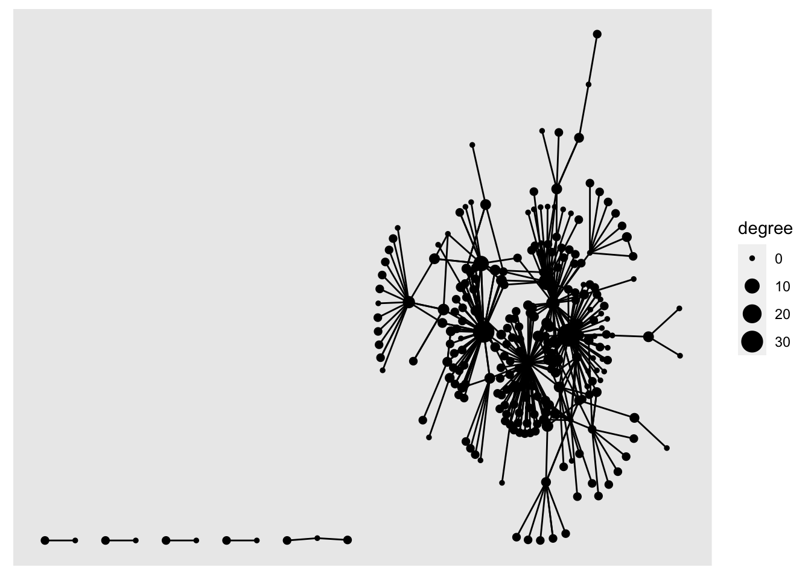
KK
sample_tbl_graph %>%
mutate(degree = centrality_degree()) %>%
ggraph('kk') +
geom_edge_link(linetype = 5,
arrow = arrow(length = unit(4, 'mm')),
end_cap = circle(3, 'mm')) +
geom_node_point(size = 3, aes(color = degree))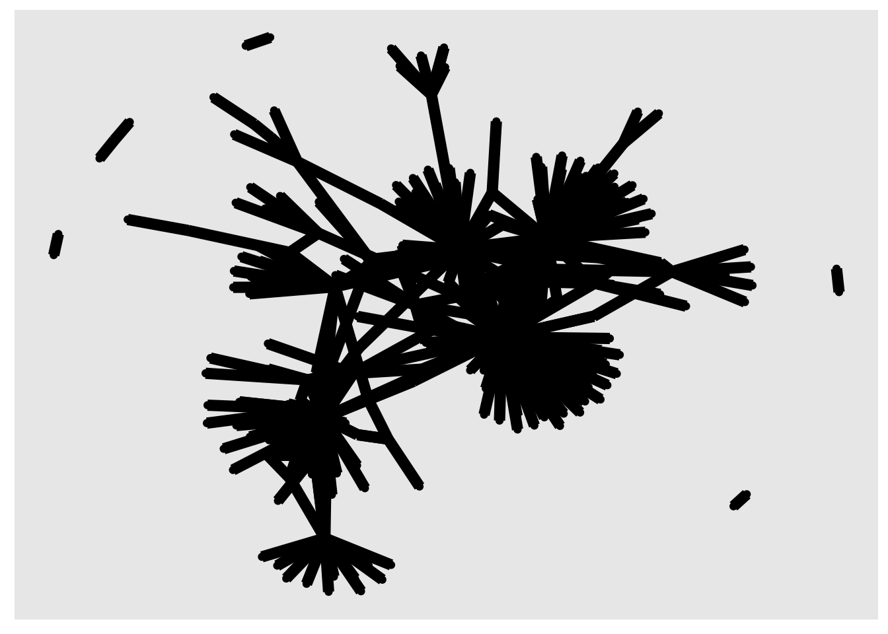
Circle
sample_tbl_graph %>%
mutate(degree = centrality_degree()) %>%
ggraph('circle') +
geom_edge_link(linetype = 5,
arrow = arrow(length = unit(4, 'mm')),
end_cap = circle(3, 'mm')) +
geom_node_point(size = 3, aes(color = degree))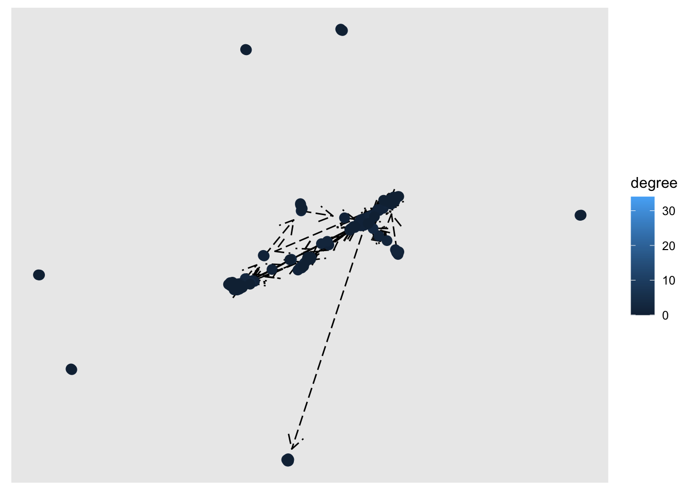
Edge types
You can also make extenstive changes to the type of edge. In many cases, these may make the diagram more readable. Some have particular uses, for example geom_edge_fan() is used for a multigraph (where you have multiple different types of edges), and geom_edge_arc can be useful for when you want to visualise the difference between incoming and outgoing edges:
sample_tbl_graph %>%
mutate(degree = centrality_degree()) %>%
ggraph('fr') +
geom_edge_bend(linetype = 5,
arrow = arrow(length = unit(4, 'mm')),
end_cap = circle(3, 'mm')) +
geom_node_point(size = 3, aes(color = degree))sample_tbl_graph %>%
mutate(degree = centrality_degree()) %>%
ggraph('fr') +
geom_edge_arc(linetype = 5,
arrow = arrow(length = unit(4, 'mm')),
end_cap = circle(3, 'mm')) +
geom_node_point(size = 3, aes(color = degree))Tree
sample_tbl_graph %>%
mutate(degree = centrality_degree()) %>%
ggraph('tree') +
geom_edge_bend(linetype = 5,
arrow = arrow(length = unit(4, 'mm')),
end_cap = circle(3, 'mm')) +
geom_node_point(size = 3, aes(color = degree))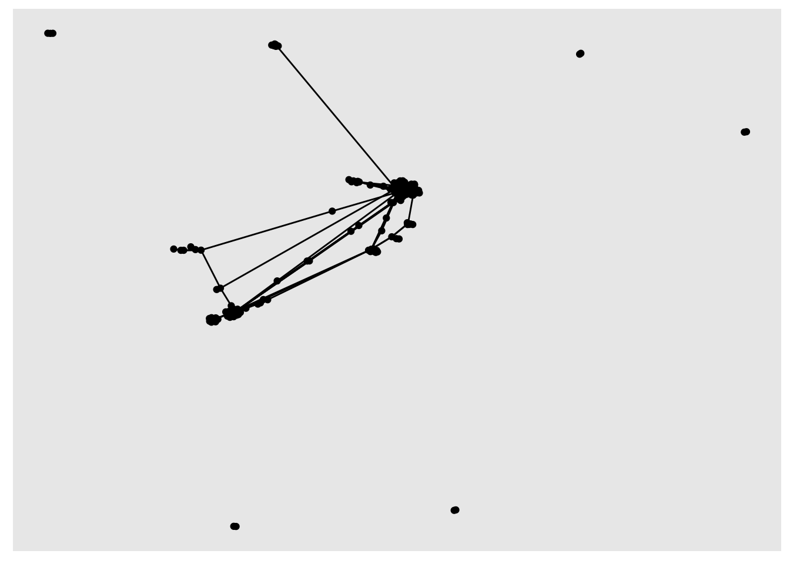
Bipartite
It is worth checking some of these out, particularly if you have a specific network structure, for example a hierarchy, or if you have a bipartite network.
Also note there are lots of other ways to visualise a network, for example by making a heatmap from an adjacency matrix. It’s worth experimenting a bit with these (and explaining choices in your final project).
Ggraph and other tidyverse functions
You can use the dplyr pipes to perform calculations, filter the data and then visualise it, all in one go:
sample_tbl_graph %>%
activate(nodes)%>%
mutate(degree = centrality_degree(mode = 'total')) %>% # calculate total degree
filter(degree >2) %>% # filter to only include nodes with a degree greater than 2.
ggraph('fr') +
geom_node_point() +
geom_edge_link()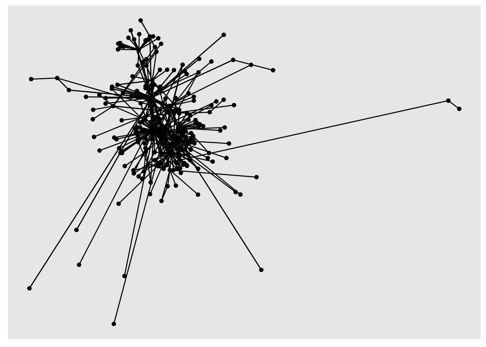
Add node labels
Add geom_node_text() to add text labels to your network. In a larger network, it can be helpful to only show labels belonging to the most-connected nodes.
To do this, join the people table to the nodes table, then use ggraph, setting the label aesthetic. Another dplyr verb, if_else allows you to add conditions to the label command.
Here, I’ve used if_else to return the label if the node’s degree score is more than 10:
A the moment, we only have the IDs for each node. In a further step we can join back the actual names and use these as labels.
sample_tbl_graph %>%
activate(nodes) %>%
mutate(degree = centrality_degree(mode = 'total')) %>%
ggraph('nicely') +
geom_node_point(aes(size = degree)) +
geom_node_text(aes(label = if_else(degree >10, name, NULL), size = degree), repel = TRUE) +
geom_edge_link(alpha = .2)## Warning: Removed 240 rows containing missing values (geom_text_repel).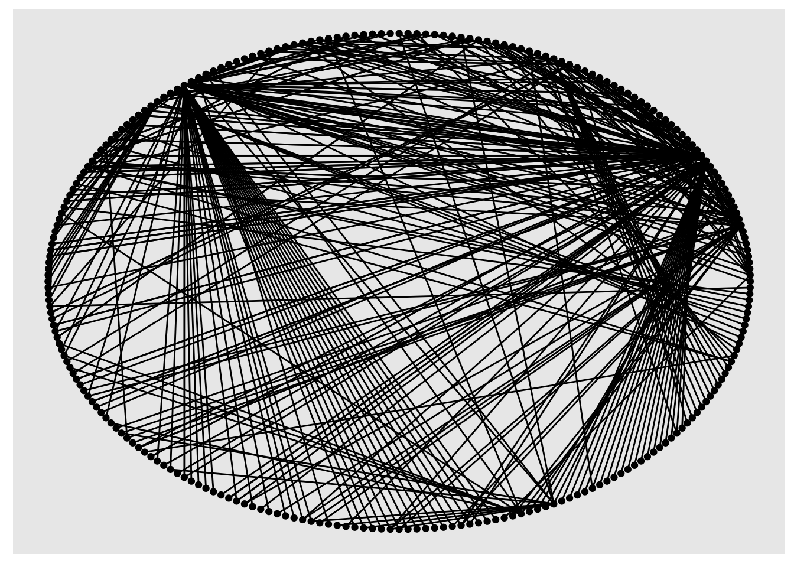
Calculating and coloring by community detection
One very common visualisation is colouring the various groups in the network, which might give us a clue as to its structure.
sample_tbl_graph %>%
as.undirected() %>%
as_tbl_graph() %>%
activate(nodes) %>%
mutate(degree = centrality_degree(mode = 'total')) %>%
mutate(community = group_edge_betweenness(weights =NULL)) %>%
filter(community %in% 1:4) %>%
ggraph('nicely') +
geom_node_point(aes(size = degree, color = as.character(community))) +
geom_edge_link(alpha = .2)## Warning in cluster_edge_betweenness(graph = .G(), weights = weights, directed =
## directed): At core/community/edge_betweenness.c:485 : Membership vector will be
## selected based on the lowest modularity score.## Warning in cluster_edge_betweenness(graph = .G(), weights = weights, directed
## = directed): At core/community/edge_betweenness.c:492 : Modularity calculation
## with weighted edge betweenness community detection might not make sense --
## modularity treats edge weights as similarities while edge betwenness treats them
## as distances.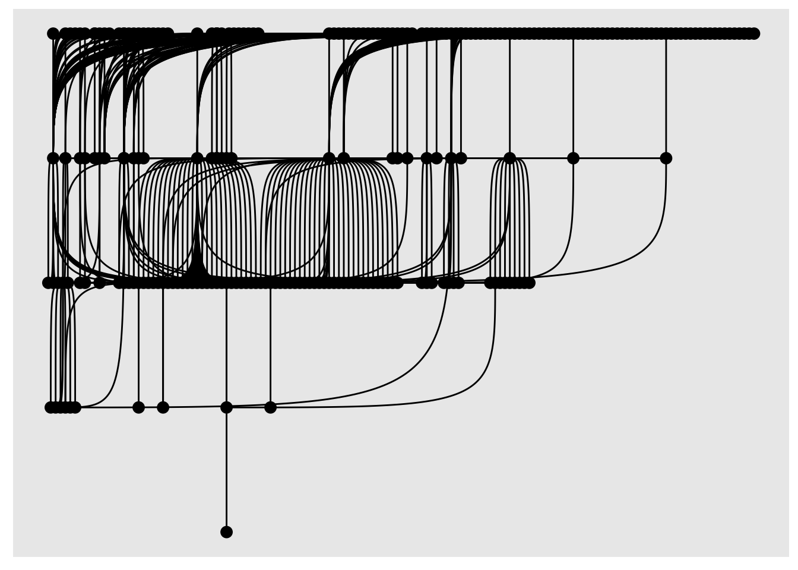
What makes a good network visualisation?
You will rarely be able to make a good network visualisation simply by pushing a button and using the default settings. You should think about what your network is trying to communicate and to what audience, and spend some time
Treat the diagram as carefully as you would an essay or other piece of text. Is it easy to understand?
Make sure you really need a network graph, and that another method of communicating the information wouldn’t be better. For example, if your diagram is simply showing the most influential nodes, would a bar chart (or even a table) with their degree work just as well?
Use colour/shape/size if you need to, but make sure you explain what each element is doing.
Spend some time showing your readers how to ‘read’ the visualisation. What is interesting about the left/right/top/bottom of the diagram? What is the significance of nodes grouped together, and what about nodes in the centre versus nodes towards the edge? Are there obvious clusters and gaps, and do these show up in the visualisation?
Case study: Scientists and Politicians
In this final section, I’ll demonstrate how these methods might be used to carry out exploratory data analysis on the sample letter dataset.
The node attributes can used either to filter the network, or added as extra visual elements. Doing so helps us to understand a bit more about why the network might look the way it does.
First, load the same node attributes table as before:
node_attributes = read_csv('node_attributes.csv')## Rows: 248 Columns: 13
## ── Column specification ────────────────────────────────────────────────────────
## Delimiter: ","
## chr (11): name, main_name, all_names, links, gender, roles_titles, wikidata_...
## dbl (2): birth_year, death_year
##
## ℹ Use `spec()` to retrieve the full column specification for this data.
## ℹ Specify the column types or set `show_col_types = FALSE` to quiet this message.This external information might help us to make sense of the clusters found by the community detection algorithm used above. One of the fields in the data is whether that person is listed as a politician on Wikidata: the field is a simple flag of either yes or no.
To check whether this might be a clue towards the structure of the network, we will set the color to the community detection results, and the shape to the politician flag, with the following code:
sample_tbl_graph %>%
as.undirected() %>%
as_tbl_graph()%>%
activate(nodes) %>%
mutate(degree = centrality_degree(mode = 'total')) %>%
left_join(node_attributes) %>%
mutate(community = group_edge_betweenness(weights =NULL)) %>%
filter(community %in% 1:4) %>%
ggraph('fr') +
geom_edge_link(alpha = .2)+
geom_node_point(aes(size = degree, color = as.character(community), shape = politician)) +
geom_node_text(aes(label = ifelse(degree >2, main_name, NA)), size = 2.5, repel = T) +
theme(legend.position = 'none')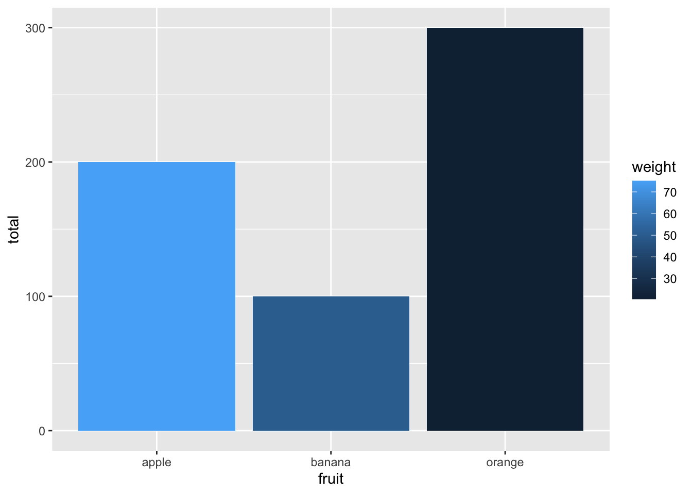
It does look like one of the four clusters (cluster 2) has far fewer politicians. This cluster seems to be a group of what might be described as natural philosophers.
Other things to look out for in this visualisation:
What is the importance of the nodes sitting in between the scientists and the politicians? What metrics might they score highly on, and what role might they occupy in this system? What kinds of information may they be able to pass on?
What is the position of Athanasius Kircher? What does it mean to be on the periphery of this network?
What effect might additional data have on the metrics in this network? Should this make us cautious about any inference from this network?
Conclusions
Hopefully, from reading this chapter, you’ll be convinced that network visualisations are useful, but that they should also be approached with caution. The bottom line is, visualisations of themselves are not a result: at the very least, they need extensive commentary in order to explain them, and in some cases, they may simply be useful ways of describing the network.
At the same time, in combination with the additional attributes from our data model, thoughtful visualisations can be incredibly useful for exploring a network dataset, revealing patterns that are otherwise hidden. I encourage you to use visualisations in your final project if they make sense, are not just ‘hairballs’, and if they can be justified with relevant commentary.